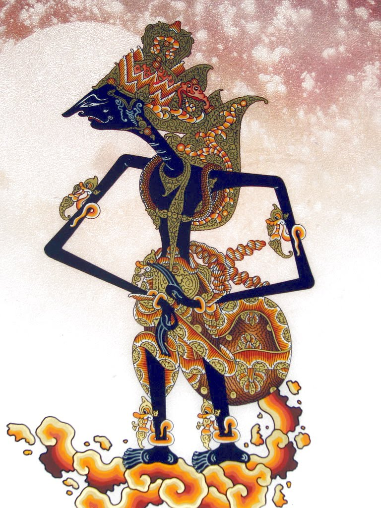

Selamat Datang Di Dunia Kacirebonan
Kacirebonan merupakan warisan budaya yang tumbuh dari perpaduan harmonis antara Jawa, Sunda, Tionghoa, dan Arab. Dalam setiap motif batik Mega Mendung yang mengalir, setiap gerakan tari topeng yang memukau, hingga kemegahan keraton yang berdiri kokoh, terpancar kekayaan budaya Cirebon yang tak ternilai harganya. Mari kita telusuri keindahan dan makna mendalam dari warisan leluhur yang luar biasa ini.
Cirebon bukan hanya sebuah kota, tetapi sebuah peradaban yang hidup, tempat di mana keberagaman menjadi kekuatan dan tradisi menjadi inspirasi abadi.
Batik Mega Mendung
Motif batik khas Cirebon yang melambangkan kesabaran dan ketenangan jiwa. Corak awan yang mengalir dalam gradasi warna mencerminkan filosofi hidup yang damai, sabar, dan penuh makna spiritual yang mendalam.
Tari Topeng Cirebon
Tari tradisional yang menggambarkan cerita wayang dengan topeng berwarna-warni yang memukau. Setiap gerakan dan ekspresi topeng memiliki makna mendalam, menceritakan perjalanan kehidupan manusia dengan segala kompleksitasnya.
Keraton Cirebon
Pusat kebudayaan dan sejarah yang masih aktif hingga kini, menjadi saksi bisu perjalanan panjang peradaban Cirebon. Arsitektur yang memadukan berbagai pengaruh budaya menciptakan harmoni yang luar biasa indah.